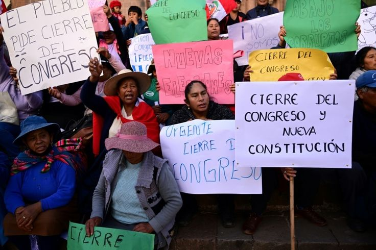

Derecho Constitucional
y Derechos Humanos
Cuando el Estado o alguien vulnera tus derechos fundamentales, la Constitución es tu escudo. Nosotros lo activamos.
En palabras simples
¿Para qué sirve el Derecho Constitucional?
La Constitución es la ley máxima del país. Ninguna otra ley puede ir en contra de ella. El Derecho Constitucional protege tus derechos más básicos: tu libertad, tu nombre, tu privacidad, tu derecho a un juicio justo.
Si el Estado, una institución pública o incluso una empresa te niega esos derechos, existen herramientas legales específicas — como el amparo o el hábeas corpus — para recuperarlos de forma urgente.
¿Te identificas con alguna de estas situaciones?
- Te detuvieron sin motivo o sin mostrarte una orden
- Una entidad pública no te entrega información que pediste
- Te despidieron de un cargo público de forma irregular
- Sientes que una ley te afecta de forma injusta
- Te discriminaron por tu origen, religión u opinión
Herramientas legales
Las 7 acciones que te protegen
Cada una sirve para una situación distinta. Te explicamos cuál aplica a tu caso.
Hábeas Corpus
Te detuvieron o te retienen ilegalmente. Esta acción exige tu liberación inmediata.
Amparo
Un acto del Estado o de alguien te vulneró un derecho fundamental. El amparo lo detiene.
Hábeas Data
Tienes derecho a saber qué información existe sobre ti y a corregirla o eliminarla.
Cumplimiento
Una autoridad no cumple con la ley o un mandato judicial. Esta acción la obliga a hacerlo.
Inconstitucionalidad
Una ley viola la Constitución. Se solicita ante el Tribunal Constitucional para anularla.
Acción Popular
Un reglamento o norma inferior a la ley te afecta. Cualquier ciudadano puede impugnarla.
Conflicto de Competencia
Dos órganos del Estado se disputan quién tiene poder sobre algo que te afecta a ti.
Lo que hacemos por ti
Servicios especializados
Acciones de Garantía Constitucional
Presentamos y gestionamos amparo, hábeas corpus, hábeas data y cumplimiento de forma urgente. Trabajamos contrarreloj porque estos procesos tienen plazos muy cortos.
Control de Constitucionalidad
Representamos a ciudadanos y organizaciones ante el Tribunal Constitucional para impugnar leyes que violan derechos. Buscamos precedentes que beneficien a más personas.
Defensa ante Organismos Internacionales
Cuando el sistema nacional no es suficiente, llevamos casos ante la Comisión y la Corte Interamericana de Derechos Humanos (CIDH).

Protección de Derechos Fundamentales
Defendemos casos de discriminación, libertad de expresión, acceso a la justicia, privacidad y debido proceso. Tu dignidad no es negociable.
"El derecho es el arte de lo bueno y lo justo.— Celso, jurista romano
¿Crees que te vulneraron un derecho?
Cuéntanos tu caso. Te decimos en qué situación estás y qué podemos hacer.
Consulta gratuita